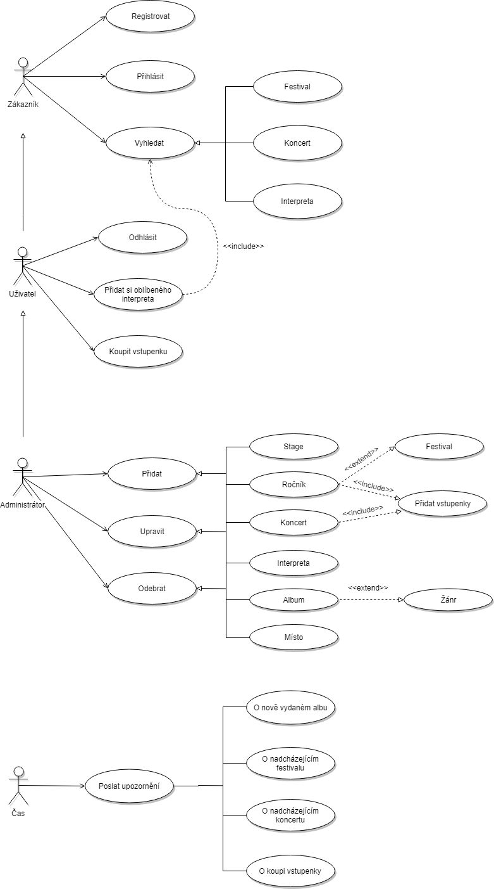
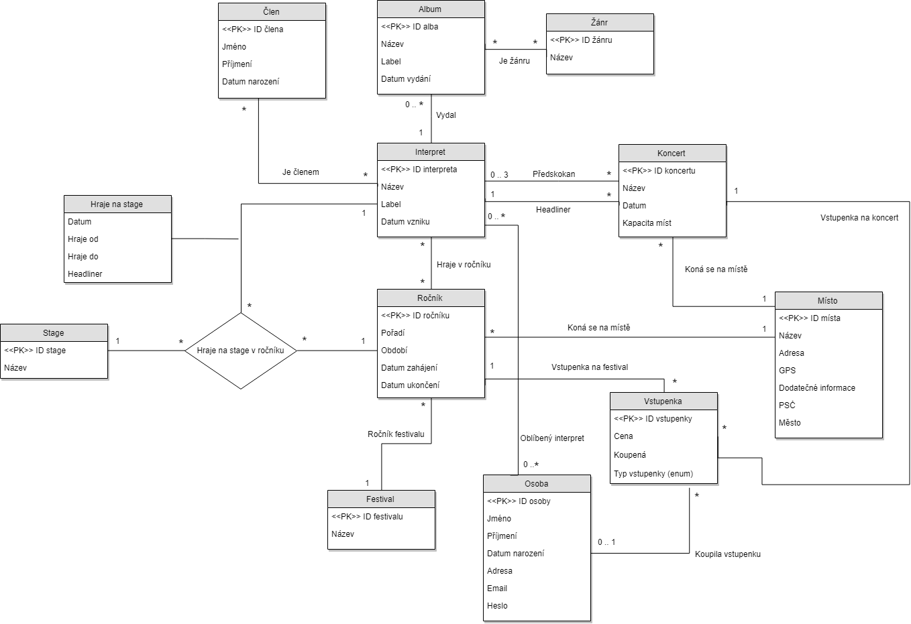

Uveïte prosím existující zástupce v¹ech rolí u¾ivatelù.
| Login | Heslo | Role |
|---|---|---|
| admin@example.com | administrator | Administrátor |
| user@example.com | uzivatel | U¾ivatel |
Struèná dokumentace k implementaci, která popisuje, které PHP skripty implementují jednotlivé pøípady pou¾ití uvedené v use-case diagramu z IDS. V pøípadì, ¾e bylo nutno pøi implementaci uèinit zmìny v návrhu, musí být v dokumentaci zdùvodnìny.
 Zde popi¹te, které body zadání (IDS a IIS) nejsou implementovány a z jakého dùvodu. Napø. „Z èasových dùvodù nebyla implementována správa u¾ivatelù.” Pomù¾ete tím zrychlit opravování, kdy¾ neimplementované funkce nebudeme muset dlouze hledat.